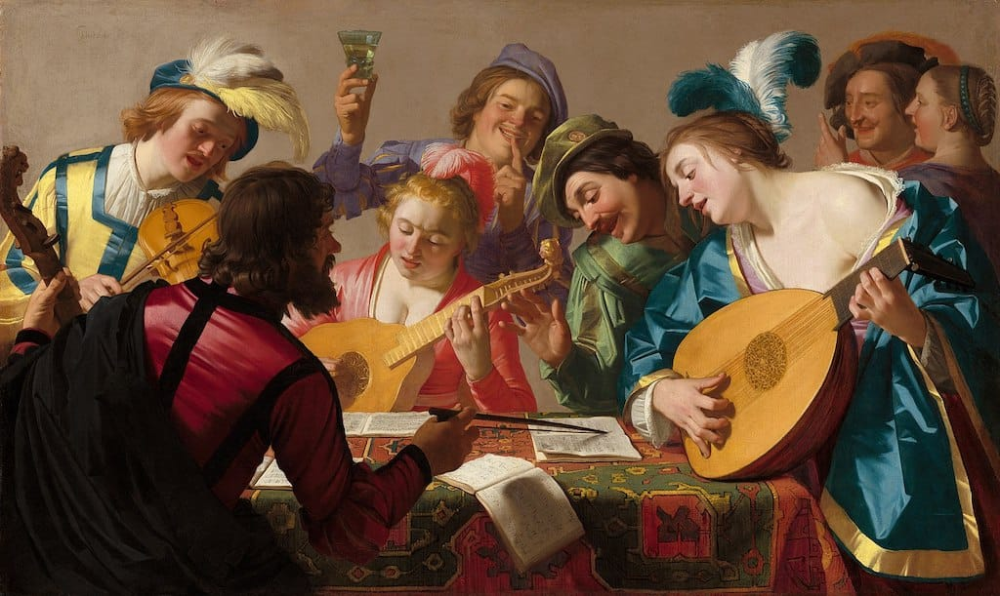
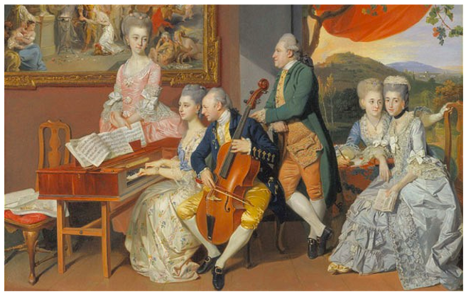
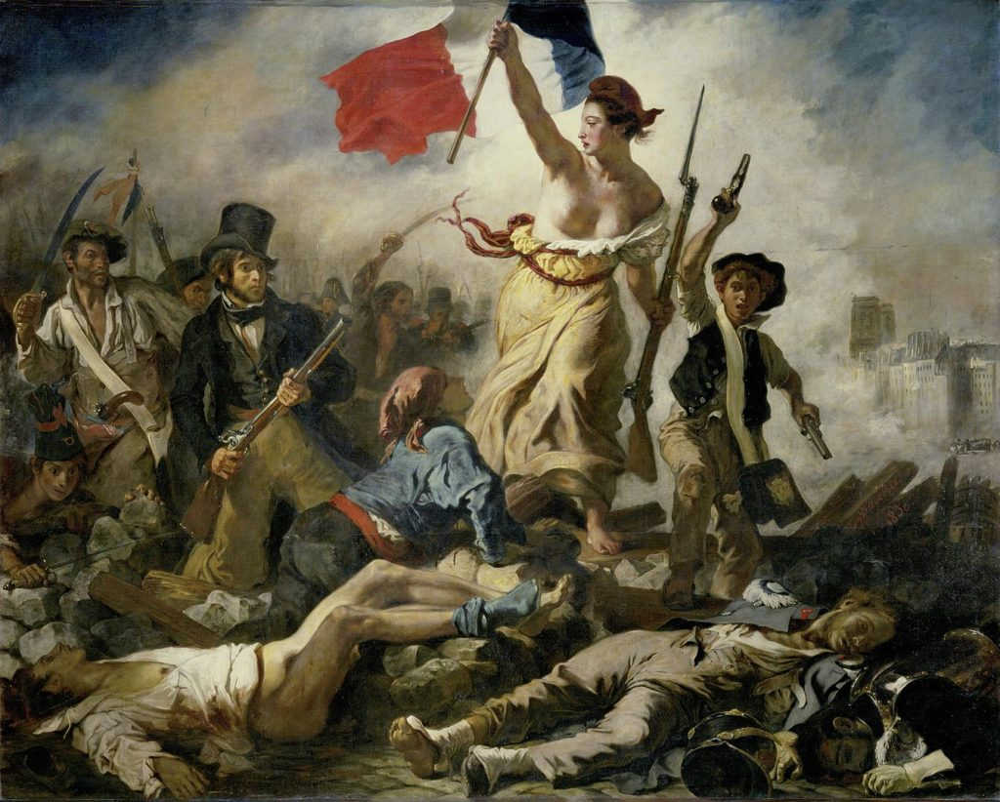
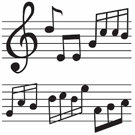

Baroque Era

The Baroque era (1600–1750) introduced rich, ornate compositions and iconic forms like concertos and operas. Dive into the works of Bach, Handel, and Vivaldi.
Learn MoreClassical Era

The Classical era (1750–1820) focused on balance and clarity. Experience the brilliance of Mozart, Beethoven, and Haydn.
Learn MoreRomantic Era

The Romantic era (1820–1900) was a time of dramatic, expressive music. Explore the works of Chopin, Tchaikovsky, and Schubert.
Learn MoreMusic Quiz

Are you a music enthusiast who can easily recognize the evolution of different music eras? Find out if you can identify key moments in music history and the artists who shaped the sound of each era. Ready to take on the challenge?
Take the Quiz